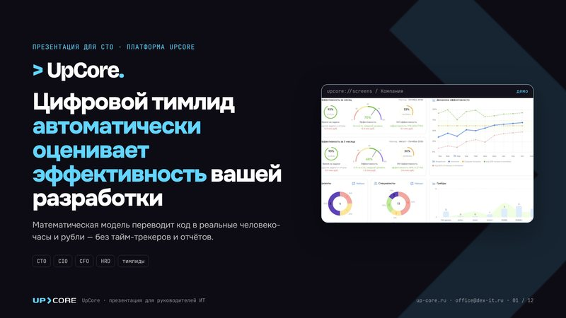
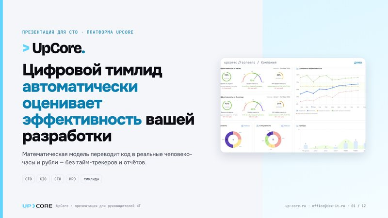
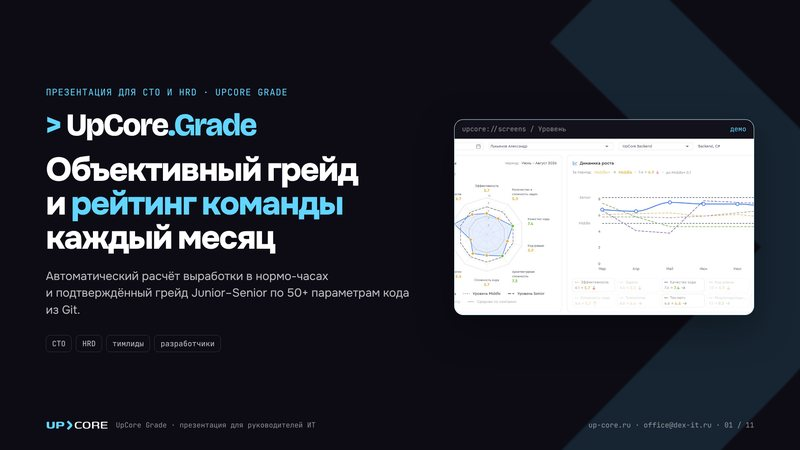
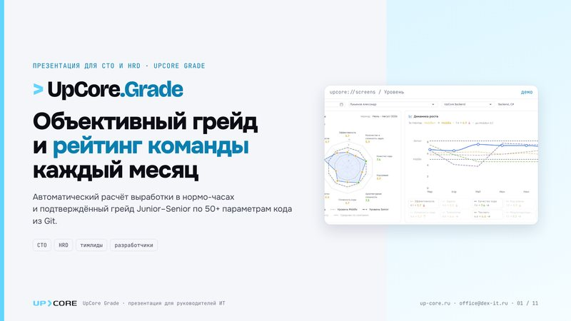
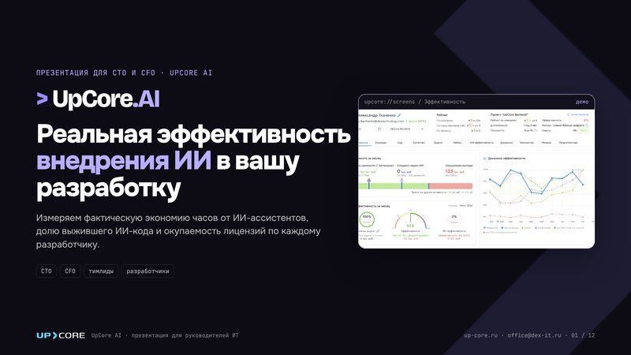
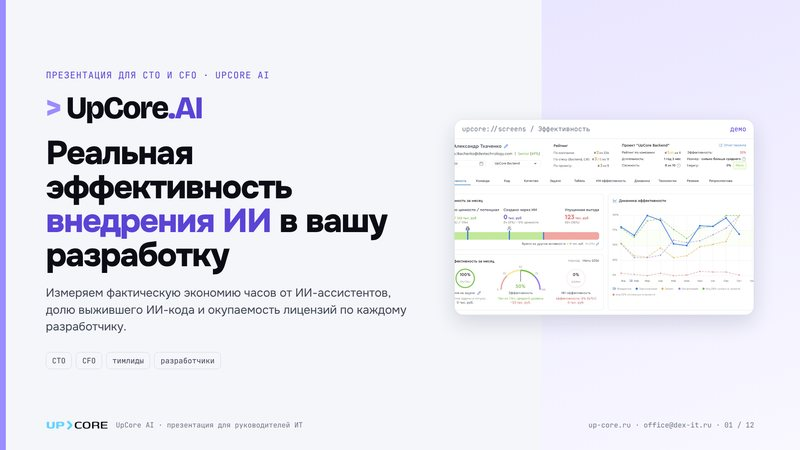
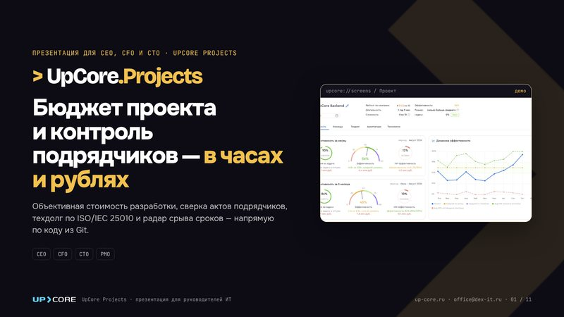
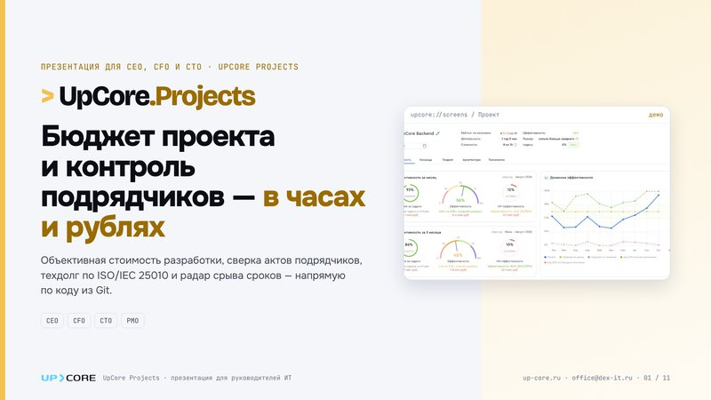
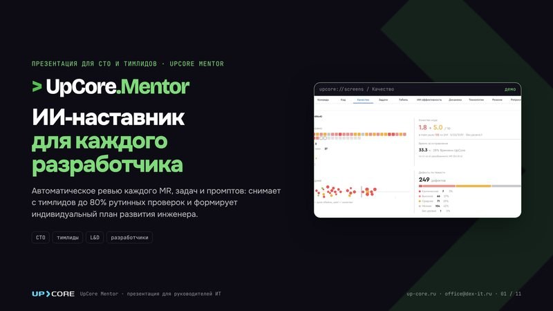
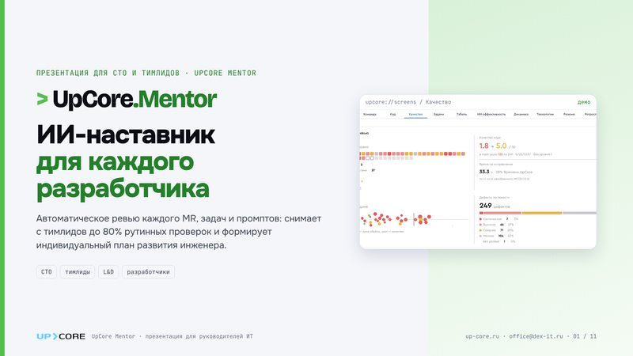

Платформа UpCore
Цифровой тимлид: проблема, математическая модель, 4 продукта, экономика, безопасность.
Платформа и 4 продукта, по 4 варианта: короткая (7 слайдов), средняя (11–12), длинная (17–19) — в стиле сайта, и светлая (содержание средней). PDF 16:9, на русском.


Цифровой тимлид: проблема, математическая модель, 4 продукта, экономика, безопасность.


Объективный грейд и рейтинг команды каждый месяц — для CTO и HRD.


Реальная эффективность ИИ и вайбкодеров: ROI, автодетект 92%+, токены, промпт-ревью.


Бюджет проекта и контроль подрядчиков в часах и рублях — для CEO, CFO, CTO.


ИИ-наставник для каждого разработчика: ревью, промпты, ИПР.